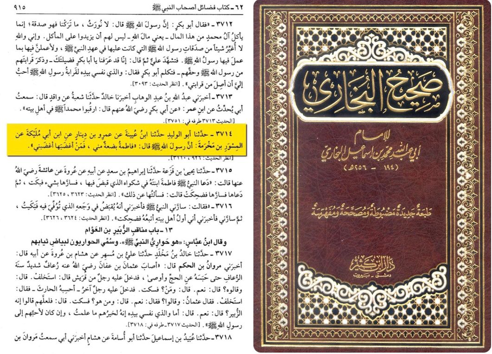
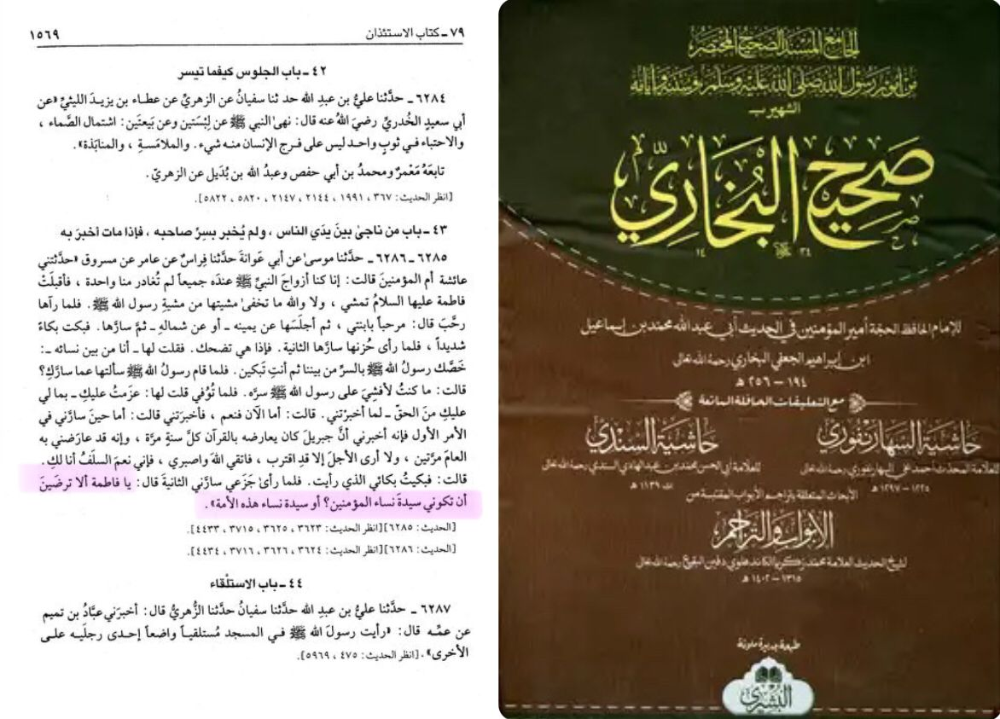

Virtues of Syeda Fatima سلام الله عليها
Narrated Al-Miswar bin Makhrama:
Allah's Messenger (ﷺ) said, "Fatima is a part of me, and he who makes her angry, makes me angry."
Sahih Al Bukharee 3714
Syeda Fatima Az Zahra was one of the four daughters of Rasoolallahﷺ, Whatever she hated, was hated by Rasoolallahﷺ. Whatever she loved, was loved by Rasoolallahﷺ and whatever offended her, offended Rasoolallahﷺ
Rasoolallahﷺ said: "Fatima is a part of my body, and I hate what she hates to see, and what hurts her, hurts me."
Sahih Al Bukharee 5230
With both this hadith and the previous one, we get to know that the most precious thing to Rasoolallahﷺ was his daughter. This also makes it evident that whoever holds hatred for her, have no respect for Rasoolallahﷺ

Narrated by Ummul Mu'mineen, the mother of the believers, A'isha (May Allah be pleased with her) that Syeda Fatima had told her that Rasoolallahﷺ said: "'O Fatima! Will you not be pleased that you will be chief of all the believing women?"
Sahih Al Bukharee 6286
This Hadith explains the most praiseworthy virtue of Syeda Az Zahra, which implies that she would be the queen of the women in paradise.